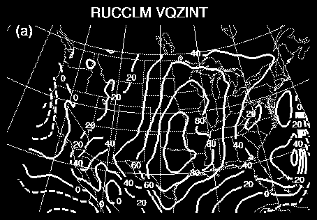
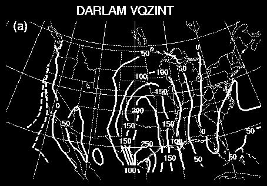
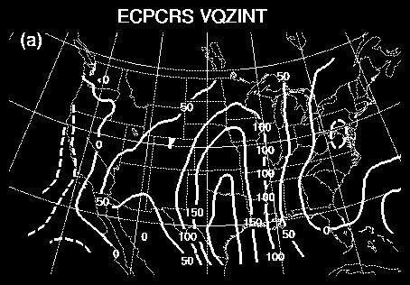
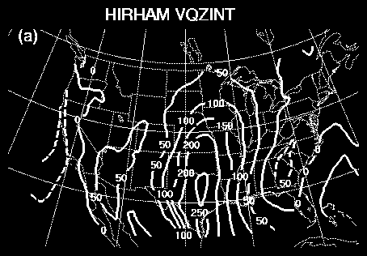
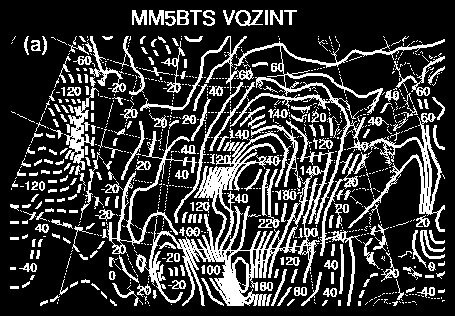
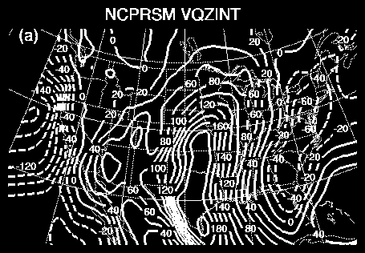
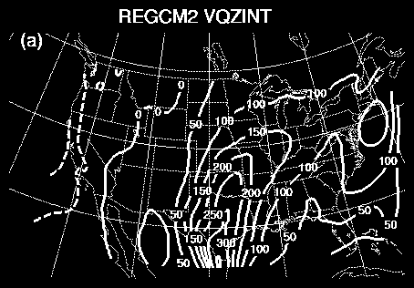

RUC meridional water vapor transport
Here is the time-average water vapor transport from the RUC integration for the PIRCS-1B period (June 1- July 31, 1993), and six other models that have participated in both PIRCS-1A and PIRCS-1B.







Last Updated on 11/13/00
By Chris Anderson